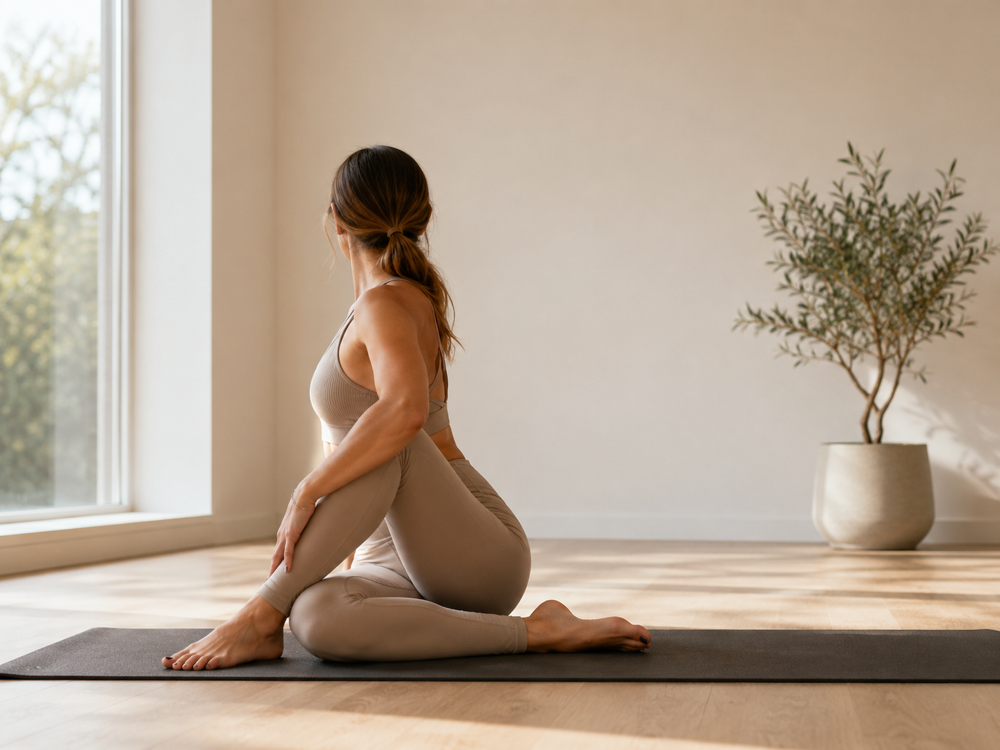

DIET COACHING
結果を決めるのは
運動ではなく食事。
週2回のトレーニングで消費するカロリーより、毎日の食事のほうが体重に効きます。食事指導が付くかどうかで、同じ期間の結果が変わります。

先に結論です。「炭水化物を抜く」だけの指導しか出てこない場所は候補から外してください。短期間で体重は落ちますが、挙式前にそれをやると肌と髪から先に落ちます。写真は悪くなります。
体験で聞くこと
| 質問 | 良い答え | 避けたい答え |
|---|---|---|
| 食事指導は何を見ますか | たんぱく質量、食事の回数、内容 | カロリーだけ |
| 炭水化物はどうしますか | 量を調整する | 完全に抜く |
| 報告の方法は | 写真か記録を送る | 自己管理のみ |
| 挙式前の注意点は | 肌と髪に出ないよう配慮する | 特にない |
| 指導する人の資格は | 管理栄養士が監修、など | 答えられない |
最後の質問が最も分かれます。トレーナーが独自に指導している場所と、栄養の専門家が設計に入っている場所は別です。
なぜ食事のほうが効くのか
1時間のトレーニングで消費するのは、多くの場合300kcal前後です。一方、1日の食事内容を変えれば500kcal以上の差が簡単に出ます。週2回の運動と毎日の食事なら、後者の影響が大きいのは計算上明らかです。
ただし運動は必要です。食事だけで落とすと筋肉から減るので、結果として太りやすくなります。運動は「減らさないため」、食事は「減らすため」と役割が分かれます。
挙式前に避けたい指導
- 糖質を完全に抜く。肌が乾き、写真で粉を吹きます。顔もしぼんで見えます
- 脂質も同時に落とす。両方抜くと肌のバリアから落ちます
- 1日1,000kcal以下。たんぱく質が足りず、髪と肌に出ます
- サプリの購入が前提。食事で足りるものを売られている場合があります
必要量の目安はたんぱく質の摂り方にまとめています。体重1kgあたり1gが基準です。
食事指導が付くジム
パーソナルジムの多くは食事指導を含みます。ただし内容には差があるので、体験の場で具体的に聞いてください。


4社の比較はパーソナルジムのページに。
ジムに通わず食事だけ整える
費用を抑えるなら、この選択もあります。食事の設計を外注する形です。献立を考える手間がなくなるぶん、続きやすいという利点もあります。

契約前の確認
食事指導が「オプション」で別料金の場合があります。総額で比べてください。また式が終われば通う理由がなくなるので、最低契約期間と解約の条件も先に確認してください。
詳しくは契約前に確認することに。
次に読む
さらに詳しく